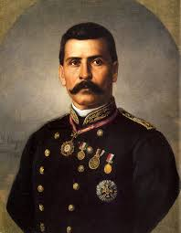

Biografía
Huérfano de padre desde los tres años, Porfirio Díaz ingresó en el Seminario de Oaxaca para seguir la carrera eclesiástica, pero pronto cambió de opinión. Cursó luego estudios de leyes en el Instituto de Ciencias y Artes, donde fue discípulo del futuro presidente liberal Benito Juárez, quien impartía derecho civil; en adelante sería seguidor suyo en lo político. El Instituto fue clausurado por orden del presidente Santa Anna en 1854. Ese mismo año intervino en la Revolución de Ayutla y apoyó al general Juan Álvarez para derrocar a Antonio López de Santa Anna.
Poco después, Porfirio Díaz ingresó en el ejército, y su carrera militar fue meteórica. En la guerra de Reforma (1858-1861), conflicto civil en el que se enfrentaron conservadores y liberales, apoyó la causa liberal. La guerra concluyó con la victoria de los liberales y llevó a la presidencia a Benito Juárez (1861); finalizada la contienda, Porfirio Díaz fue ascendido a general y elegido diputado.
Apenas un año más tarde tomó de nuevo las armas contra la invasión francesa (1862-1863) y la coronación de Maximiliano I (1864-1867) como emperador de México. Fue jefe de brigada en Acultzingo en abril de 1862 y ese mismo año participó en la batalla de Cinco de Mayo al lado de Ignacio Zaragoza. En 1867 protagonizó una brillante acción militar en Puebla: tras sitiar la ciudad, realizó un asalto sangriento y rápido contra las tropas del emperador Maximiliano, que se refugiaron en los cerros de Loreto y Guadalupe. Sin perder tiempo, avanzó hacia la capital de la República y la tomó el 2 de abril de 1867, hecho que fue de gran trascendencia militar, pues adelantó la caída del Imperio de Maximiliano y el triunfo de Juárez.
Un año después, en 1877, el Congreso lo declaró presidente constitucional. En este primer mandato (1876-1880), Porfirio Díaz fue coherente con las ideas que había defendido: impulsó una reforma de la constitución en la que se introdujo el veto expreso a las reelecciones presidenciales consecutivas, y, concluido su periodo, pasó el testigo al general Manuel González (1880-1884). Durante el gobierno de González fue ministro de Fomento y gobernador de Oaxaca.
Finalizado el mandato de González, Porfirio Díaz presentó de nuevo su candidatura a la presidencia (la constitución sólo vetaba las reelecciones consecutivas) y salió elegido. Tomó posesión del cargo el 1 de diciembre, y tres años más tarde promovió una enmienda, que fue aprobada por el Congreso, al artículo 78 de la Constitución, la cual le acreditaba para una nueva reelección; en 1890 promulgó una nueva reforma de dicho artículo para hacer posible la reelección indefinida, lo que le permitió permanecer en el poder hasta 1911.
Todo ello fue posible porque Porfirio Díaz, ejerciendo su poder omnímodo, había ido reduciendo las instituciones políticas liberales a una mera farsa democrática: ordenó la eliminación de todos los adversarios políticos posibles, y la prensa fue sometida o perseguida cuando intentaba mantenerse independiente. Puede afirmarse que, a partir de 1890, Porfirio Díaz gobernó al margen de la Constitución, y prescindió de la división de poderes y de la soberanía de los estados. El Congreso, sumiso a sus deseos, modificaba las leyes según sus caprichos y le confería facultades extraordinarias a su conveniencia; existía un partido único y los sufragios eran puro trámite.
El pueblo mexicano estaba hastiado del desorden y la guerra, y Díaz se propuso imponer la paz a toda costa. México no contaba con fondos ni tenía capacidad crediticia porque no había pagado sus deudas con puntualidad, así que había que atraer al capital extranjero; el problema era que nadie invertiría en México si no había estabilidad y paz. Con una política de mano dura, Porfirio Díaz trató de eliminar las diferencias de opiniones sobre asuntos políticos, y se dedicó a mejorar el funcionamiento del gobierno. "Poca política y mucha administración" fue el lema de aquel tiempo.
La paz no fue total, pero Díaz consiguió mantener el orden mediante el uso de la fuerza pública. Policías y soldados persiguieron lo mismo a los bandoleros que a los opositores. Gracias a esa nueva situación de estabilidad, aumentó la demanda de trabajo y se hizo posible el desarrollo económico; el país contaba con recursos y los empresarios podían obtener buenas ganancias.
Sin embargo, con el paso del tiempo se hizo evidente que la prosperidad era sólo para unos pocos. Creció el descontento por la miseria en que vivía la mayor parte de la población, y amplios sectores sociales tomaron conciencia de que Díaz llevaba demasiado tiempo en el poder. Cada vez fue más difícil mantener el orden: en los últimos años del Porfiriato reinó un clima de represión en el que la fuerza de las armas se utilizaba con violencia creciente. De ello dan muestra la torpeza con que se negociaron y la dureza con que se reprimieron las huelgas de Cananea (1906), en Sonora, y de Río Blanco (1907), en Veracruz, así como el modo en que se persiguió a los periodistas que criticaban al régimen y a cualquiera que manifestara una opinión que no fuese la oficial.
En 1908, Porfirio Díaz concedió una entrevista al periodista norteamericano James Creelman, en la cual afirmó que México ya estaba preparado para tener elecciones libres. La noticia llenó de optimismo a una nueva generación que quería participar en la vida política de la nación. Surgieron así varios líderes y partidos políticos, y se escribieron libros y artículos que discutían la situación del país y la solución de sus problemas.
Uno de esos líderes fue Francisco I. Madero. Había estudiado y viajado fuera de México, pues venía de una familia de hacendados y empresarios, y no tenía dificultades económicas. Madero fundó el partido Antirreeleccionista, del que se postuló candidato; después se dedicó a viajar por todo el país para explicar sus ideas políticas, algo que no se veía desde los tiempos de Juárez. Madero se hizo muy popular y despertó grandes esperanzas de cambio.
Pero el éxito de su campaña lo convirtió en un peligro para el gobierno de Porfirio Díaz, y poco antes de las elecciones de 1910 fue detenido en Monterrey y encarcelado en San Luis Potosí. Allí recibió la noticia de que Díaz, una vez más, había sido reelegido para la presidencia. Mediante el pago de una fianza salió de la cárcel, aunque debía permanecer en la ciudad. Sin embargo, a principios de octubre Madero escapó a los Estados Unidos de América, donde proclamó el Plan de San Luis.
En ese documento, Madero denunció la ilegalidad de las elecciones y desconoció a Porfirio Díaz como presidente. Se declaró él mismo presidente provisional, hasta que se realizaran nuevas elecciones; prometió que se devolverían las tierras a quienes hubieran sido despojados de ellas, y pidió que se defendiera el sufragio efectivo y la no reelección de los presidentes. También hizo un llamamiento al pueblo para que el 20 de noviembre de 1910 se levantara en armas y arrojara del poder al dictador.
El ejército de Porfirio Díaz, que había mantenido la paz durante décadas, parecía muy fuerte, pero en realidad era débil frente al descontento general. En sólo seis meses las fuerzas maderistas triunfaron sobre las del viejo dictador. La acción definitiva fue la toma de Ciudad Juárez por los revolucionarios Pascual Orozco y Pancho Villa, que se habían unido a Madero. En esa misma ciudad, en mayo de 1911, se firmó la paz entre el gobierno de Díaz y los maderistas. Porfirio Díaz renunció a la presidencia (que pasó a ocupar Francisco I. Madero tras ganar la elecciones) y salió del país rumbo a Francia, donde murió en 1915.
